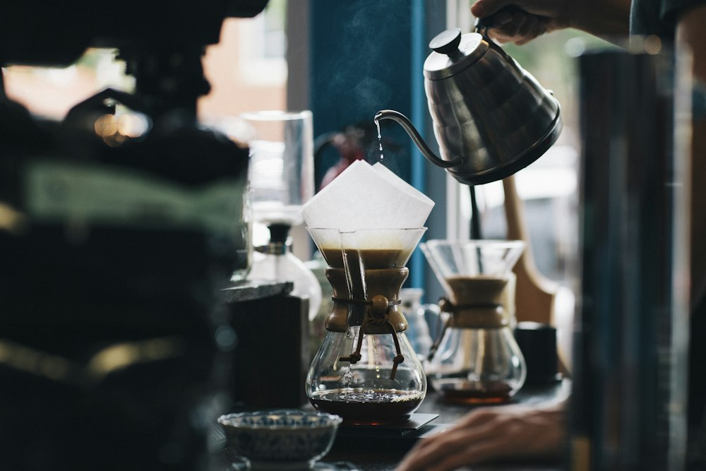
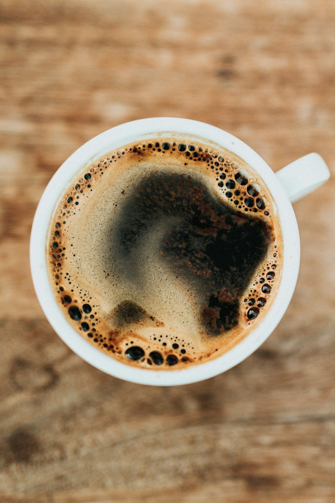

Light roast

A light and delicate coffee with a fresh flavour. This roast is a good choice for a slow morning or a relaxing afternoon break.
250 g — €8.90

Find your favourite coffee in our selection. We offer three roast levels, from a gentle light roast to a rich dark roast. Enjoy your coffee black or with your favourite milk.
A light and delicate coffee with a fresh flavour. This roast is a good choice for a slow morning or a relaxing afternoon break.
250 g — €8.90

A balanced coffee with a smooth flavour. Enjoy it on its own or add a little milk. A comfortable everyday favourite.
250 g — €9.90

A rich coffee with a strong roasted flavour. Choose this roast if you enjoy a bold cup with a deep and lasting taste.
250 g — €10.90